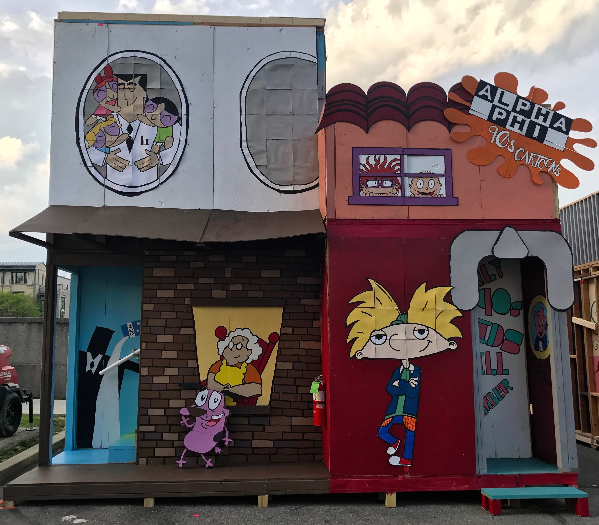
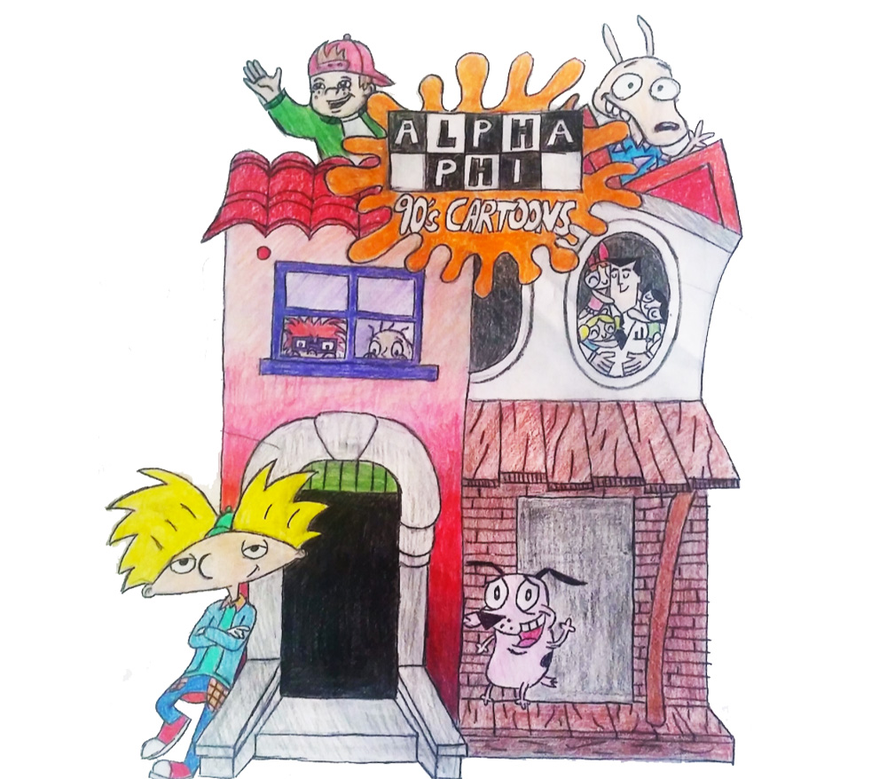
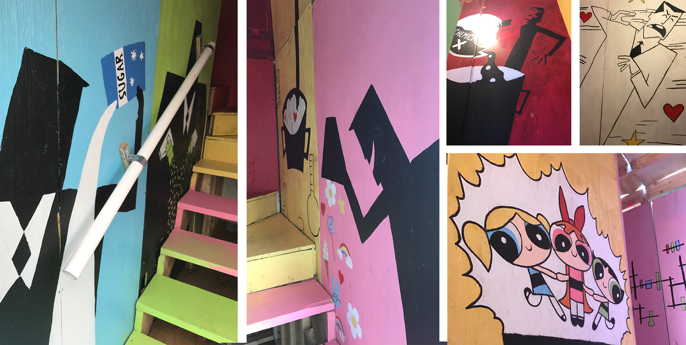
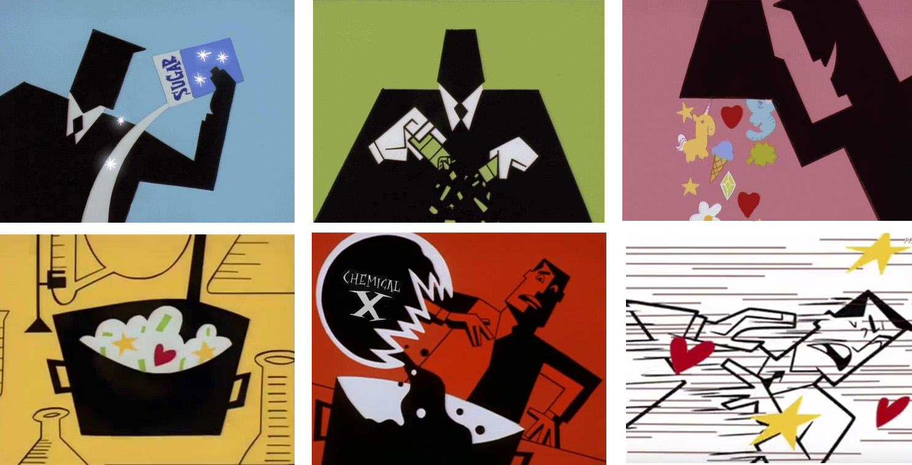
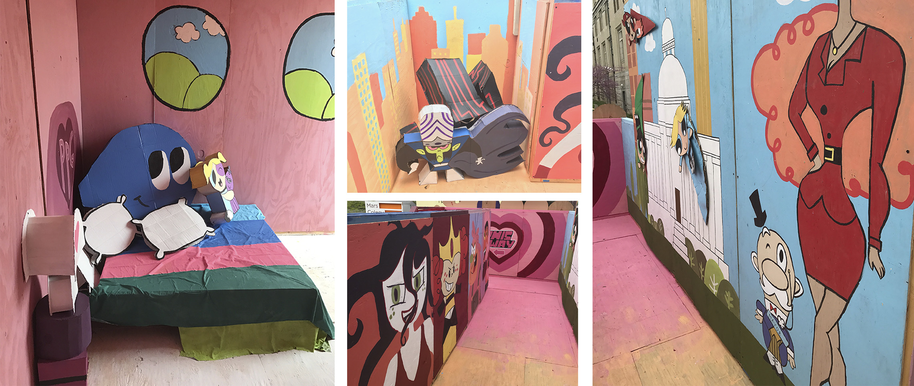
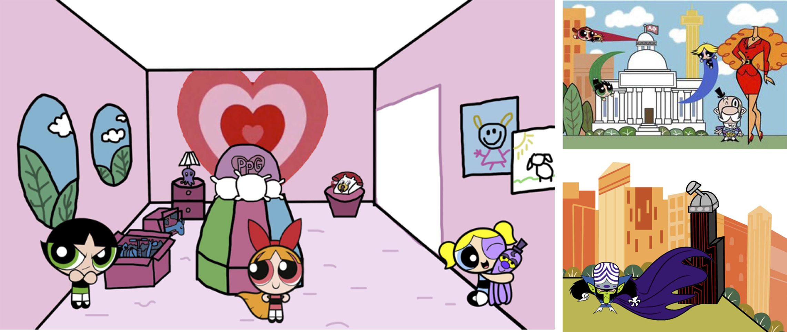
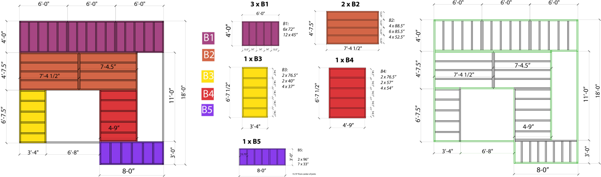
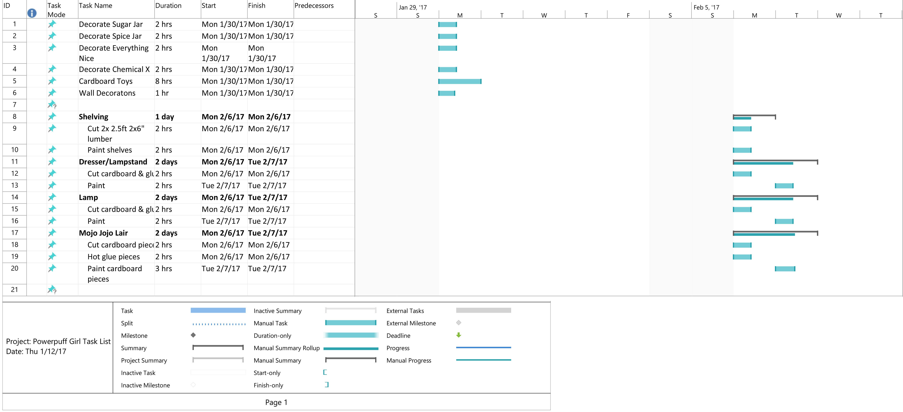
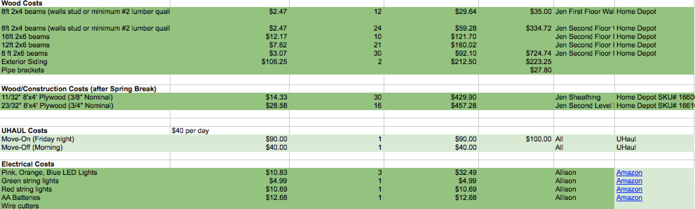

3rd Place in Sorority Division
Designs and drawings created in collaboration with Emily Melillo and Cynthia Cano


In addition to overseeing the entire project, I was in charge of the design and creation of the second floor - entirely Powerpuff Girls themed. I drew all initial designs using Adobe Photoshop, and led a team of 15 people in painting the walls and building figures to fill the rooms. The first staircase, featuring the intro of the Powerpuff Girls show, was also supplemented by audio.




Shown below are samples from construction drawings. The original set of construction drawings were created by Emily Melillo, and were edited and reviewed by me to ensure pieces would be supported and meet structural standards established by the Spring Carnival Committee.

Each wall was sheathed using 1/8" plywood. I created a tracker of plywood pieces and sizes our organization had from previous years and used this information to create a sheathing layout that used as many recycled pieces as possible.

I reviewed the original construction drawings to ensure the building would be safe, finding the second floor platforms created by our construction chair were initially floating in mid-air and not resting on walls from the first floor. I edited the drawings and frame dimensions so that at least 2 opposite sides were supported by frames from below.
I created schedules for each room within the structure (total of 3 rooms & exterior) spanning from January to April 2017 using MS Project.

I also managed the budget for the entire project. The project went under budget at around $4000, with an initial budget of $5500.

A walkthrough of the entire structure is shown below.